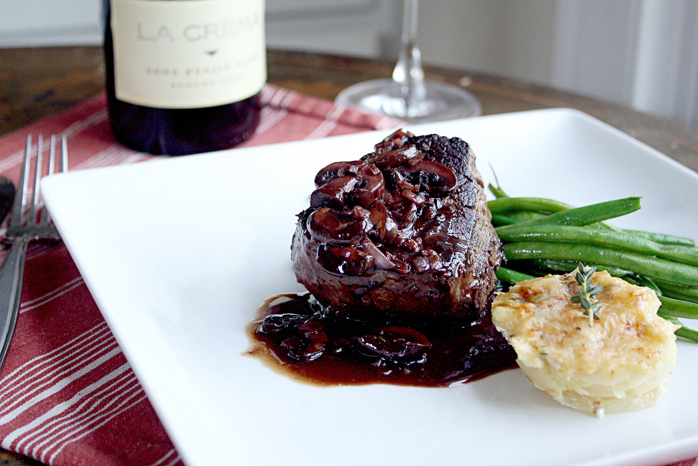

Red Wine (Cabernet) Reduction

Description
Our red wine reduction makes anything you've had at a restaurant taste like watered down steak sauce.
Generally speaking - this reduction is much thicker and more flavorful than any other recipe we have tried.
You dont need a really expensive bottle to make this reduction - just grab anything from the bottom shelf and that'll work.
Ingredients
- Olive Oil - 1 tablespoon
- Shallot - 1 (medium size)
- Carbernet Wine - 1 750 ml bottle, you can use another red wine - but cabernet is our favorite.
- Beef Stock - 1 Quart
- Butter - 1/4 lb. stick
- Worchester Sauce - to taste
- Sugar - 2 Tablespoons
- Black Pepper - to taste
- Salt - to taste
Steps
- Sautee the shallot in a large pot with the olive oil just untill soft.
- Add in the wine and beef broth, bring to a low simmer whisking continuously.
Don't allow the wine to burn onto the side or bottom of the pot.
- After the liquid has reduced by half - add in the butter and worchester sauce
- Reduce by half once more and add the sugar, salt, and pepper
- Serve warm or room temperature